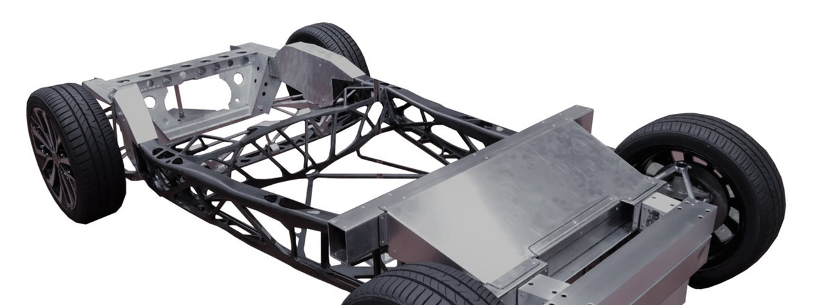
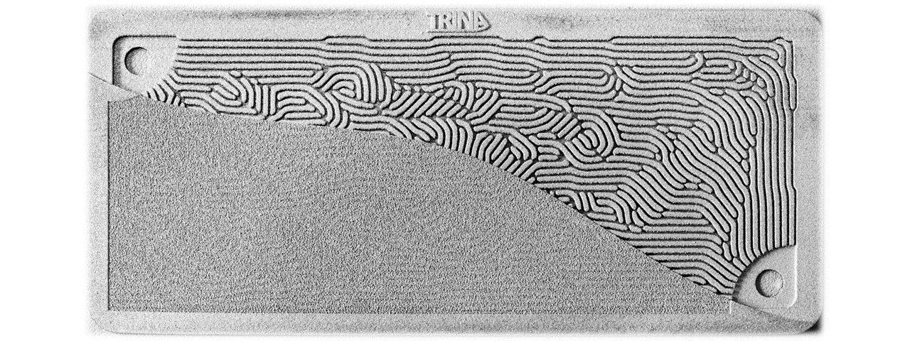
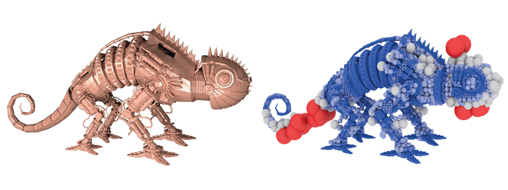
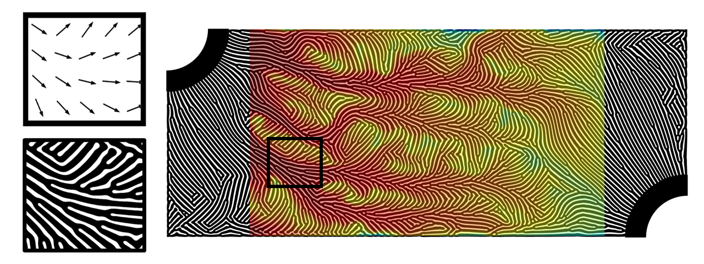
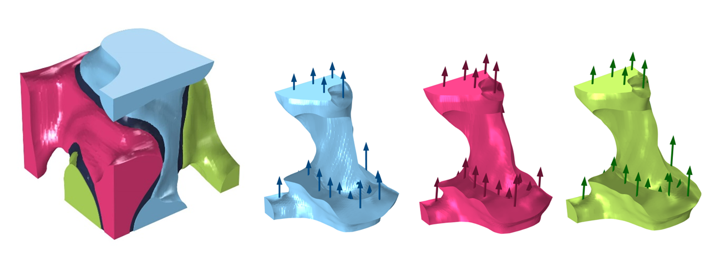
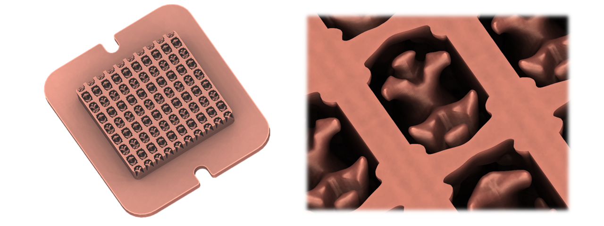
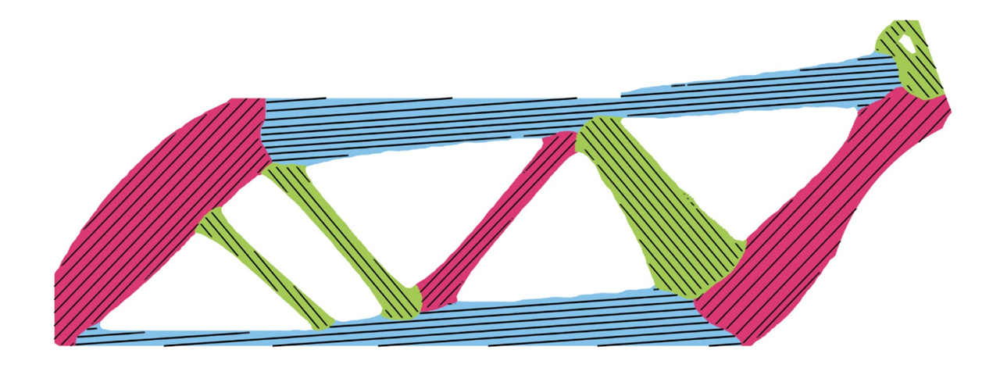

Bio
I am a research scientist in Electronics Research Department at Toyota Research Institute of North America.
My research focuses on exploring innovative geometries through simulation-based structural optimization to achieve high-performance and manufacturable engineering designs.
Previously, I spent a wonderful year in Tokyo, Japan working on photonic chip design with Toyota Central R&D Labs and Toyota Frontier Research Center.
I earned my Ph.D. from the Department of Mechanical Engineering at University of Michigan, under the guidance of Prof. Kazuhiro Saitou.
In my free time, I like messing around with camera gears and cheering for the maize and blue.
I've been playing NBA Live/2K since early 2000s, and to this day, it's still the only video game I play.
Research
My work lies at the intersection of design optimization, multiphysics simulation, and advanced fabrication.
I formulate structural design problems as PDE-constrained optimization, where at least one constraint is expressed through a partial differential equation governing the physics equilibrium.
I've enjoyed using PDEs to model
elastic deformation,
fluid flow,
heat transfer,
electrochemical reaction, and
electromagnetic wave propagation
across different projects.
I also incorporate process-specific fabrication constraints to ensure that the optimized designs are manufacturable.
Recent topics include:
- Quantum photonic integrated circuits
NEW!
- Lightweight composite structures made by tailored fiber placement
- Flow field plates for hydrogen fuel cells
Selected Publications
More papers and patents...
-

2025
Prototyping a CFRP-aluminum automotive frame via multi-component anisotropic topology optimization
Tsuyoshi Nomura, Yuqing Zhou, Masaaki Tanaka, Hiroki Kobayashi, Changyoung Yuhn, Atsushi Kawamoto, Yoshihiro Iwano
Structural and Multidisciplinary Optimization
[paper] [video]
-

2025
Inverse design and porous metal printing of GDL-integrated flow field plates for high-temperature hydrogen fuel cells
Yuqing Zhou, Danny J Lohan, Utsav R Aryal, Gaohua Zhu, Ercan M Dede
International Journal of Hydrogen Energy
[paper]
-

2024
Multi-level partition of unity on differentiable moving particles
Jinjin He, Taiyuan Zhang, Hiroki Kobayashi, Atsushi Kawamoto, Yuqing Zhou, Tsuyoshi Nomura, Bo Zhu
ACM Transactions on Graphics
[paper] [video]
-

2022
Inverse design of microreactor flow fields through anisotropic porous media optimization and dehomogenization
Yuqing Zhou, Danny J Lohan, Feng Zhou, Tsuyoshi Nomura, Ercan M Dede
Chemical Engineering Journal
[paper] [video]
[story]
-

2021
Anisotropic multicomponent topology optimization for additive manufacturing with build orientation design and stress-constrained interfaces
Yuqing Zhou, Tsuyoshi Nomura, Kazuhiro Saitou
ASME Journal of Computing and Information Science in Engineering
[paper] [video]
-

2020
Topology optimization of manifold microchannel heat sinks
Yuqing Zhou, Tsuyoshi Nomura, Ercan M Dede
19th IEEE Intersociety Conference on Thermal and Thermomechanical Phenomena in Electronic Systems (ITherm)
[paper]
-

2018
Multi-component topology and material orientation design of composite structures (MTO-C)
Yuqing Zhou, Tsuyoshi Nomura, Kazuhiro Saitou
Computer Methods in Applied Mechanics and Engineering
[paper]
Dissertation
Zhou, Y. (2018). Gradient-Based Multi-Component Topology Optimization for Manufacturability. PhD Thesis, University of Michigan. [thesis]